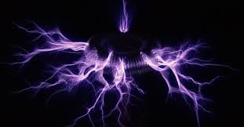
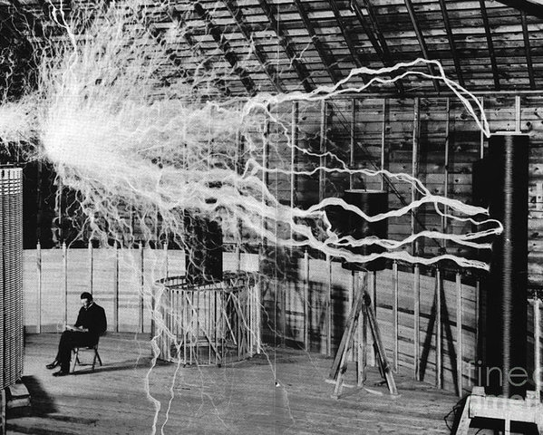
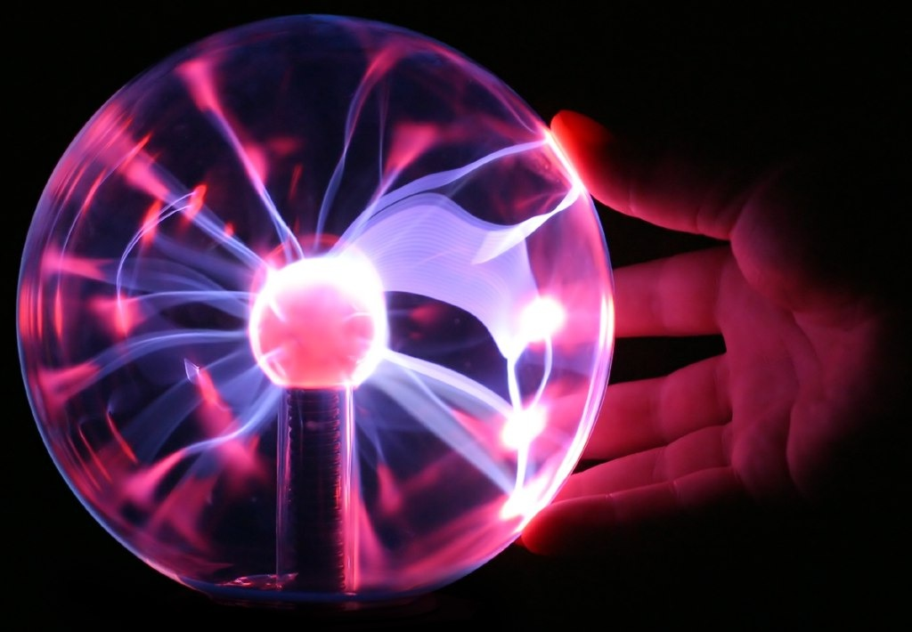
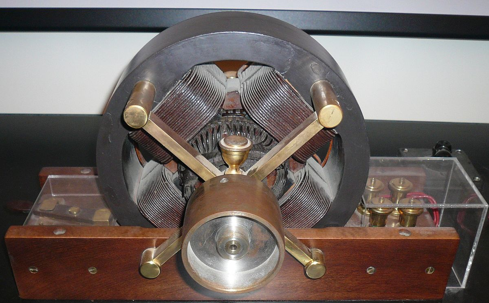

The Tesla Coil
Chances are that you have already seen this invention. It is a tower (of any height)
that uses coils to shoot lightning out into the air. The capacitors store and build up
the energy to create a spark gap then shoot the energy into the air like lightning bolts.
Tesla Coils can be found in museums and science centers as entertainment, they never took on much of a
purpose beyond scientific testing.
The Magnifying Transmitter
One of Tesla’s biggest obsessions was providing power wirelessly and he had intended
the Tesla Coil to be part of his wireless power systems. To test this,
he built two record-breaking Tesla Coils. The towers shot out lightning bolts 130 feet long
. Tesla was considered to be ahead of his time and wireless electrical power didn’t get
officially developed until the mid-2010’s. Today it still isn’t as prevalent as it could be.
The Radio

Before his lab burnt down, Tesla was working on developing a radio. He was going to send
the signal 50 miles but before he could rebuild his lab and his equipment,
an Italian man in England was able to secure the patent for the device. Tesla’s radio
would have been stronger if he had been able to use it.
The Neon Lamp
He took the lights and created the first neon sign.At the 1893 Chicago World’s Fair, he demonstrated
neon light signs and how they can make unique designs and even form words.
Thanks to Tesla you can identify your favorite bar.
The Induction Motor
Again, Tesla went head to head in creating an invention. This time Tesla won.
Ferrari may have presented their induction engine first but
Tesla had filed for his patents earlier. The motor uses electromagnets to spin.
It is commonly used in vacuums, blow dryers, and power tools, even today.